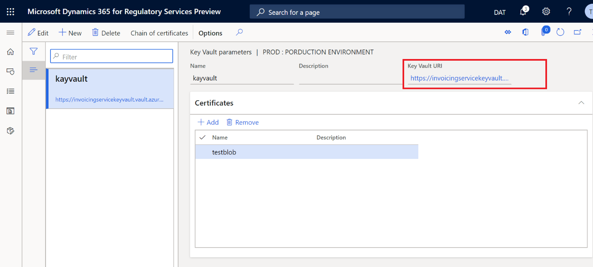
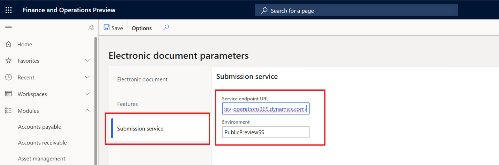

Erste Schritte mit dem Add-On für die elektronische Rechnungsstellung
Important
Dynamics 365 for Finance and Operations hat sich zu speziell entwickelten Anwendungen entwickelt, mit denen Sie bestimmte Geschäftsfunktionen verwalten können. Weitere Informationen zu diesen Änderungen finden Sie im Dynamics 365-Lizenzierungshandbuch.
Dieses Thema enthält Informationen, die Ihnen den Einstieg in das Add-On für die elektronische Rechnungsstellung erleichtern. Zunächst werden Sie durch die Konfigurationsschritte in Microsoft Dynamics Lifecycle Services (LCS), Regulatory Configuration Services (RCS) und Dynamics 365 Finance geführt. Als Nächstes wird der Prozess zum Übermitteln von Dokumenten über den Service mithilfe von Dynamics 365 Finance oder Dynamics 365 Supply Chain Management beschrieben. Sie erfahren außerdem, wie Sie die Übermittlungsprotokolle interpretieren.
Verfügbarkeit
Das Add-On für die elektronische Rechnungsstellung ist zunächst für mehrere Länder verfügbar. Das Add-In unterstützt das Erstellen elektronischer Rechnungen und das Übermitteln der folgenden Geschäftsdokumente:
| Land/Region | Geschäftsdokument |
|---|---|
| Österreich | Verkaufs- und Projektrechnungen |
| Belgien | Verkaufs- und Projektrechnungen |
| Brasilien | Elektronische Steuerdokumentmodell 55 (NF-e) |
| Dänemark | Verkaufs- und Projektrechnungen |
| Estland | Verkaufs- und Projektrechnungen |
| Finnland | Verkaufs- und Projektrechnungen |
| Frankreich | Verkaufs- und Projektrechnungen |
| Deutschland | Verkaufs- und Projektrechnungen |
| Italien | Verkaufs- und Projektrechnungen |
| Mexiko | CFDI-Rechnung |
| Niederlande | Verkaufs- und Projektrechnungen |
| Norwegen | Verkaufs- und Projektrechnungen |
| Spanien | Verkaufs- und Projektrechnungen |
| Europa | Verkaufs- und Projektrechnungen im PEPPOL-Format |
Lizenzierung
Sie können das Add-On für die elektronische Rechnungsstellung mit Ihrer aktuellen Lizenz verwenden. Für die Nutzung des Service sind keine zusätzlichen Lizenzen erforderlich.
Voraussetzungen
Bevor Sie die Schritte in diesem Thema abschließen, müssen die folgenden Voraussetzungen erfüllt sein:
- Zugriff auf Ihr LCS-Konto.
- Ein LCS-Bereitstellungsprojekt, das Finance oder Supply Chain Management Version 10.0.13 oder höher enthält.
- Zugriff auf Ihr RCS-Konto.
- Aktivieren Sie die Globalisierungsfunktion für Ihr RCS-Konto über das Modul Funktionsverwaltung. Weitere Informationen finden Sie unter Regulatory Configuration Services (RCS) – Globalisierungsfunktionen
- Erstellen Sie einen Schlüsseltresor und ein Speicherkonto in Azure. Weitere Informationen finden Sie unter Erstellen eines Azure-Speicherkontos und eines Schlüsseltresors.
Übersicht
Die folgende Abbildung zeigt die fünf Hauptschritte, die Sie in diesem Thema ausführen werden.
- Einrichtung der Azure-Ressourcen: Konfigurieren Sie den Azure-Speicher und das Hochladen digitaler Zertifikate in Azure Key Vault.
- LCS-Einrichtung: Installieren Sie das Add-In für Microservices.
- RCS-Einrichtung: Richten Sie die Funktionen für Umgebung, Benutzerzugriff und elektronische Rechnungsstellung ein.
- Clienteinrichtung: Richten Sie die Verbindung zwischen dem Client und dem Add-On für die elektronische Rechnungsstellung ein und deaktivieren Sie die alten Funktionen zum Übermitteln und Empfangen von Antworten für elektronische Dokumente.
- Rechnungen übermitteln: Übermitteln Sie elektronische Dokumente über das Add-On für die elektronische Rechnungsstellung und empfangen Sie Antworten.
Note
Einige Konfigurationsschritte in diesem Thema werden häufig ausgeführt und sind landes-/regionsunabhängig. Die landesspezifischen Schritte und Einrichtungsprozeduren werden in landesspezifischen Themen beschrieben.
LCS-Einstellungen
Melden Sie sich bei Ihrem LCS-Konto an.
Wählen Sie die Kachel Verwaltung von Vorschaufunktionen und dann in der Feldgruppe Öffentliche Vorschaufunktion die Option BusinessDocumentSubmission aus.
Markieren Sie das Feld Vorschaufunktion aktiviert.
Wählen Sie das LCS-Bereitstellungsprojekt aus. Bevor Sie das Projekt auswählen können, muss es betriebsbereit sein.
Wählen Sie auf dem Inforegister Umgebungs-Add-Ins die Option Neues Add-In installieren aus.
Wählen Sie Übermittlung von Geschäftsdokumenten aus.
Geben Sie im Dialogfeld Add-In einrichten in das Feld AAD-Anwendungs-ID die ID 091c98b0-a1c9-4b02-b62c-7753395ccabe ein. Dieser Wert ist ein fester Wert.
Geben Sie in das Feld AAD-Mandanten-ID die ID Ihres Azure-Abonnementkontos ein.
Aktivieren Sie das Kontrollkästchen, um die allgemeinen Geschäftsbedingungen zu akzeptieren.
Wählen Sie Installieren.
RCS-Einstellungen
Während der RCS-Einrichtung führen Sie folgende Aufgaben aus:
- Richten Sie den Schlüsseltresor in RCS ein.
- Richten Sie die RCS-Integration auf dem Add-On-Server für die elektronische Rechnungsstellung ein.
- Erstellen Sie eine Add-On-Umgebung für die elektronische Rechnungsstellung für Ihre Organisation.
Einrichten des Schlüsseltresors in RCS
Melden Sie sich bei Ihrem RCS-Konto an.
Wählen Sie im Arbeitsbereich Globalisierungsfunktionen im Abschnitt Umgebungen die Kachel Elektronische Rechnungsstellung aus.
Wählen Sie Serviceumgebungen aus.

Note
Die Option Verbundene Anwendungen gewährt Zugriff auf die automatische Konfiguration des Add-Ons für die elektronische Rechnungsstellung in Finance oder Supply Management über das RCS. Derzeit befindet sich diese Funktion jedoch noch in der Entwicklung.
Wählen Sie im Aktivitätsbereich Key Vault-Parameter aus.

Wählen Sie im Aktivitätsbereich Neu aus, um einen Schlüsseltresor hinzuzufügen.
Geben Sie im Feld Key Vault URI den Wert des DNS-Name-Attributs der Schlüsseltresorressource ein, die Sie in Azure konfiguriert haben. Informationen dazu, wo Sie den Wert DNS-Name finden, sind unter Erstellen eines Azure-Speicherkontos und eines Schlüsseltresors zu finden.

Wählen Sie auf dem Inforegister Zertifikate die Option Hinzufügen aus. Geben Sie alle Namen digitaler Zertifikate und Schlüsseltresorgeheimnisse ein, die zum Herstellen vertrauenswürdiger Verbindungen erforderlich sind. In der Spalte Typ können Sie angeben, ob es sich um ein Zertifikat oder ein Geheimnis handelt. Beide Wertegruppen werden in Azure für die Schlüsseltresorressource konfiguriert.

Wenn für Ihre landes-/regionsspezifische Rechnung eine Zertifikatskette erforderlich ist, um eine digitale Signatur anzuwenden, wählen Sie im Aktivitätsbereich die Option Zertifikatskette aus und geben Sie die Reihenfolge der Zertifikate oder Schlüsseltresorgeheimnisse ein, aus denen die Kette besteht.
Einrichten der RCS-Integration auf dem Add-On-Server für die elektronische Rechnungsstellung
- Wählen Sie im Arbeitsbereich Globalisierungsfunktionen im Abschnitt Zugehörige Einstellungen den Link Elektronische Berichterstellungsparameter aus.
- Wählen Sie Hier klicken, um eine Verbindung zu Lifecycle Service herzustellen aus. Wenn Sie keine Verbindung zu LCS herstellen möchten, wählen Sie Abbrechen aus.
- Geben Sie auf der E-Invoicing-Dienst-Registerkarte im Feld Dienstendpunkt-URI den Wert entsprechend den verfügbaren Regionen ein:
https://businessdocumentsubmission.us.operations365.dynamics.com/oderhttps://businessdocumentsubmission.eu.operations365.dynamics.com/. - Überprüfen Sie, ob im Feld Anwendungs-ID die ID 0cdb527f-a8d1-4bf8-9436-b352c68682b2 angezeigt wird. Dieser Wert ist ein fester Wert.
- Geben Sie in das Feld LCS-Umgebungs-ID die ID Ihres LCS-Abonnementkontos ein.

Hinzufügen einer Add-On-Umgebung für die elektronische Rechnungsstellung
Sie können verschiedene Umgebungen für das Add-On für die elektronische Rechnungsstellung erstellen, z. B. Entwicklungs-, Test- oder Produktionsumgebungen.
Wählen Sie im Arbeitsbereich Globalisierungsfunktionen im Abschnitt Umgebungen die Kachel Elektronische Rechnungsstellung aus.
Wählen Sie Neu aus, um eine Umgebung zu erstellen.
Geben Sie im Speicher SAS-Tokenkonto den Wert des Schlüsseltresorgeheimnisses ein, das Sie im Schlüsseltresor in RCS konfiguriert haben.

Wählen Sie auf dem Inforegister Benutzer die Option Neu aus, um Benutzern Zugriff auf diese Umgebung zu gewähren.

Wählen Sie im Aktivitätsbereich die Option Veröffentlichen aus, um die Umgebung auf dem Add-On-Server für die elektronische Rechnungsstellung zu veröffentlichen.

Einrichtung für die Funktion für die elektronische Rechnungsstellung
„Die Funktion für die elektronische Rechnungsstellung“ ist der generische Name für die Ressource, die so konfiguriert und veröffentlicht ist, dass sie den Add-On-Server für die elektronische Rechnungsstellung verwendet. Das Einrichten der Funktion für die elektronische Rechnungsstellung umfasst unter anderem die Verwendung von Konfigurationsformaten der elektronischen Berichterstellung (EB) zum Erstellen konfigurierbarer Export- und Importdateien sowie die Verwendung von Aktivitäten und Aktivitätsabläufen, um die Erstellung konfigurierbarer Regeln zum Senden von Anforderungen, zum Importieren von Antworten und zum Analysieren des Inhalts der Antworten zu ermöglichen.
Aufgrund unterschiedlicher Rechnungsformate und Aktivitätsabläufe ist die Einrichtung der Funktion für die elektronische Rechnungserstellung landes-/regionsabhängig.
Einrichten der Add-On-Integration für die elektronische Rechnungsstellung in Finance oder Supply Chain Management
Während dieser Einrichtung führen Sie die folgenden Aufgaben aus:
- Öffnen der Flight-Funktion
- Aktivieren Sie die Integrationsfunktion für das Add-On für die elektronische Rechnungsstellung, um die Integration in Finance zu ermöglichen.
- Richten Sie die URL des Endpunkts des Add-Ons für die elektronische Rechnungsstellung ein.
- Importieren Sie die EB-Konfigurationen, die sich auf die landes-/regionsspezifische Funktion für die elektronische Rechnungsstellung beziehen.
- Aktivieren Sie die entsprechende landes-/regionsspezifische Funktion für die elektronische Rechnungsstellung.
- Importieren Sie die BR-Konfigurationen und richten Sie die Antworttypen ein, die erforderlich sind, um Ihr landes-/regionsspezifisches Rechnungsdokument als Ergebnis des Übermittlungsprozesses zu aktualisieren.
Öffnen einer per Flighting aktivierten Funktion
Die Funktion zur Integration elektronischer Rechnungen wird per Flighting aktiviert. Flighting ist ein Konzept, bei dem eine Funktion standardmäßig ein- oder ausgeschaltet sein kann. Die folgenden Schritte ermöglichen die Erstellung eines Flight in einer Nicht-Produktionsumgebung.
Führen Sie den folgenden SQL-Befehl aus:
INSERT INTO SYSFLIGHTING (FLIGHTNAME, ENABLED) VALUES ('BusinessDocumentSubmissionServiceEnabled', 1)
INSERT INTO SYSFLIGHTING (FLIGHTNAME, ENABLED) VALUES ('ElectronicInvoicingServiceIntegrationFeature', 1)
Führen Sie nach der obigen Änderung einen IISReset für alle Microsoft Dynamics AX Application Object Server (AOS) durch
Aktivieren Sie die Integrationsfunktion für das Add-On für die elektronische Rechnungsstellung.
- Melden Sie sich bei Finance oder Supply Chain Management an.
- Suchen Sie im Arbeitsbereich Funktionsverwaltung nach der neuen Funktion Integration des konfigurierbaren Add-Ons für die elektronische Rechnungsstellung. Wenn die Funktion auf der Seite „Funktionsverwaltung“ weiterhin nicht angezeigt wird, führen Sie die Funktion Nach Updates suchen aus.
- Wählen Sie die Funktion aus und wählen Sie dann Jetzt aktivieren aus.
Einrichten der Service-Endpunkt-URL
- Navigieren Sie zu Organisationsverwaltung > Einrichtung > Parameter elektronischer Dokumente.
- Geben Sie auf der Registerkarte Abonnementservice in das Feld Dienstendpunkt-URL
https://businessdocumentsubmission.us.operations365.dynamics.com/ein. - Geben Sie in das Feld Umgebung den Namen der Add-On-Umgebung für die elektronische Rechnungsstellung ein, die Sie während der RCS-Einrichtung erstellt haben.

Importieren der EB-Konfigurationen
Damit Geschäftsdaten erfasst und an das Add-On für die elektronische Rechnungsstellung gesendet werden können, müssen Sie das EB-Datenmodell und die EB-Datenmodellkonfiguration importieren, die sich auf die landes-/regionsspezifische Funktion für die elektronische Rechnungsstellung beziehen, die Sie verwenden möchten.
- Wählen Sie im Arbeitsbereich Elektronische Berichterstellung im Abschnitt Konfigurationsanbieter die Kachel Microsoft aus. Stellen Sie sicher, dass dieser Konfigurationsanbieter auf Aktiv festgelegt ist. Weitere Informationen zum Festlegen eines Anbieters auf Aktiv finden Sie unter Erstellen von Konfigurationsanbietern und Markieren als aktiv.
- Wählen Sie Repositorys aus.
- Wählen Sie Globale Ressource und dann Öffnen aus.
- Wählen Sie im Dialogfeld Mit Lifecycle Services verbinden die Option Hier klicken, um eine Verbindung zu Lifecycle Service herzustellen aus.
- Abhängig von dem Land oder der Region, in der Sie die Funktion für die elektronische Rechnungsstellung verwenden möchten, müssen Sie das entsprechende Datenmodell, die Datenmodellzuordnung und die Formate importieren. Informationen zu den EB-Konfigurationen, die Sie importieren sollten, finden Sie im landes-/regionsspezifischen Thema „Erste Schritte mit dem Add-On für die elektronische Rechnungsstellung“.
- Importieren Sie Kontextmodell Debitorenrechnung. Dieses Modell enthält zusätzliche Parameter, die unter anderem die Umgebung in Finance beschreiben, die für das Add-On für die elektronische Rechnungsstellung während der Übermittlung von Geschäftsdaten verwendet wird.
Aktivieren landes-/regionsspezifischer Funktion für die elektronische Rechnungsstellung
Um landes-/regionsspezifische Funktionen für die elektronische Rechnungsstellung zu aktivieren, damit sie mit dem Add-On für die elektronische Rechnungsstellung funktionieren, müssen Sie die Funktion in jeder juristischen Person aktivieren, in der Sie sie verwenden möchten. Anschließend kann die alte Integration der elektronischen Rechnungsstellung nicht mehr verwendet werden und die Integration mit dem neuen Add-On für die elektronische Rechnungsstellung wird aktiviert.
- Navigieren Sie zu Organisationsverwaltung > Einrichtung > Parameter elektronischer Dokumente.
- Aktivieren Sie auf der Registerkarte Funktionen in der Zeile für die Funktion, die sich auf Ihre landes-/regionsspezifische Funktion für die elektronische Rechnungsstellung bezieht, das Kontrollkästchen in der Spalte Aktiviert. Informationen zu den Funktionen, die Sie aktivieren sollten, finden Sie im landes-/regionsspezifischen Thema „Erste Schritte mit dem Add-On für die elektronische Rechnungsstellung“.

Note
Bei mehreren juristischen Personen, die für verschiedene Länder oder Regionen konfiguriert sind, können Sie die landes-/regionsspezifische Funktion für jede juristische Person einzeln aktivieren.
Importieren Sie EB-Konfigurationen und richten Sie die Antworttypen ein, um Ihr landes-/regionsspezifisches Rechnungsdokument zu aktualisieren
Wenn für das übermittelte Rechnungsdokument nach der Antwort auf die Übermittlung an die staatlichen Autorisierungsdienste eine Aktualisierung erforderlich ist, müssen Sie ein spezielles EB-Datenmodell und Konfigurationen importieren, damit der Status des Rechnungsdokuments oder eines anderen zusätzlichen Felds aktualisiert werden kann.
- Wählen Sie im Arbeitsbereich Elektronische Berichterstellung im Abschnitt Konfigurationsanbieter die Kachel Microsoft aus.
- Wählen Sie Repositorys aus.
- Wählen Sie Globale Ressource und dann Öffnen aus.
- Importieren Sie Antwortnachrichtenmodell, Importformat für Antwortnachrichten, Zuordnung des Antwortnachrichtenmodells zu Ziel und Importformat für Dateiinhalte.
- Navigieren Sie zu Organisationsverwaltung > Einrichtung > Parameter elektronischer Dokumente.
- Wählen Sie auf der Registerkarte Elektronisches Dokument die Option Hinzufügen aus, um den Namen der Tabelle einzugeben, die sich auf Ihr landes-/regionsspezifisches Rechnungsdokument bezieht. Informationen zu den Tabellennamen, die Sie auswählen sollten, finden Sie im landes-/regionsspezifischen Thema „Erste Schritte mit dem Add-On für die elektronische Rechnungsstellung“.
- Wählen Sie Antworttypen aus, um die Antworttypen zu konfigurieren. Informationen zu den Tabellennamen, die Sie auswählen sollten, finden Sie im landes-/regionsspezifischen Thema „Erste Schritte mit dem Add-On für die elektronische Rechnungsstellung“.

Namen der Funktionen für die elektronische Rechnungsstellung nach Land
In der folgenden Tabelle werden andere Funktionen für die elektronische Rechnungsstellung beschrieben, die aus dem globalen Repository für elektronische Berichte heruntergeladen werden können, um elektronische Rechnungen zu generieren. In RCS können Sie die in dieser Tabelle aufgeführten Funktionen für die elektronische Rechnungsstellung, die EB-Konfigurationen und die verfügbaren Funktionseinrichtungen zur elektronische Rechnungsstellung herunterladen. In Finance können Sie die zugehörigen Funktionsreferenzen auf der Seite Parameter elektronischer Dokumente aktivieren, um elektronische Rechnungen für diese Länder auszustellen. Weitere Informationen finden Sie im Abschnitt Aktivieren landes-/regionsspezifischer Funktion für die elektronische Rechnungsstellung weiter oben in diesem Thema.
| Funktionsname | Beschreibung | ER-Konfigurationen | Einrichtungen | Land/Region | Funktionsreferenz |
|---|---|---|---|---|---|
| Elektronische Rechnungen für Österreich (AT) | Verkaufs- und Projektrechnungen für Österreich | - OIOUBL Verkaufsrechnung - OIOUBL Projektrechnung - OIOUBL Verkaufsgutschrift - OIOUBL Projektgutschrift |
- Generierung von Verkaufsrechnungen (AT) - Generierung von Projektrechnungen (AT) - Generierung von Verkaufsgutschriften (AT) - Generierung von Projektgutschriften (AT) |
Österreich | EUR-00023 |
| Elektronische Rechnungen für Belgien (BE) | Verkaufs- und Projektrechnungen für Belgien | - UBL Verkaufsrechnung BE - UBL Projektrechnung BE - UBL Projektgutschrift BE - UBL Verkaufsgutschrift BE |
- Generierung von Verkaufsrechnungen (BE) - Generierung von Projektrechnungen (BE) - Generierung von Verkaufsgutschriften (BE) - Generierung von Projektgutschriften (BE) |
Belgien | EUR-00023 |
| Elektronische Rechnungen für Dänemark (DK) | Verkaufs- und Projektrechnungen für Dänemark | - OIOUBL Verkaufsrechnung - OIOUBL Projektrechnung - OIOUBL Verkaufsgutschrift - OIOUBL Projektgutschrift |
- Generierung von Verkaufsrechnungen (DK) - Generierung von Projektrechnungen (DK) - Generierung von Verkaufsgutschriften (DK) - Generierung von Projektgutschriften (DK) |
Dänemark | EUR-00023 DK-00001 |
| Elektronische Rechnungen für die Niederlande (NL) | Verkaufs- und Projektrechnungen für die Niederlande | - UBL Verkaufsrechnung NL - UBL Projektrechnung NL - UBL Verkaufsgutschrift NL - UBL Projektgutschrift NL |
- Generierung von Verkaufsrechnungen (NL) - Generierung von Projektrechnungen (NL) - Generierung von Verkaufsgutschriften (NL) - Generierung von Projektgutschriften (NL) |
Die Niederlande | EUR-00023 |
| Elektronische Rechnungen für Estland (EE) | Verkaufs- und Projektrechnungen für Estland | - Verkaufsrechnung (EE) - Projektrechnung (EE) |
- Generierung von Verkaufsrechnungen (EE) - Generierung von Projektrechnungen (EE) |
Estland | EUR-00023 |
| Elektronische Rechnungen für Finnland (FI) | Verkaufs- und Projektrechnungen für Finnland | - Verkaufsrechnung (FI) - Generierung von Projektrechnungen (FI) |
- Generierung von Verkaufsrechnungen (FI) - Generierung von Projektrechnungen (FI) |
Finnland | EUR-00023 |
| Elektronische Rechnungen für Frankreich (FR) | Verkaufs- und Projektrechnungen für Frankreich | - UBL Verkaufsrechnung FR - UBL Projektrechnung FR - UBL Verkaufsgutschrift FR - UBL Projektgutschrift FR |
- Generierung von Verkaufsrechnungen (FR) - Generierung von Projektrechnungen (FR) - Generierung von Verkaufsgutschriften (FR) - Generierung von Projektgutschriften (FR) |
Frankreich | EUR-00023 |
| Elektronische Rechnungen für Deutschland (DE) | Verkaufs- und Projektrechnungen für Deutschland | - Verkaufsrechnung (DE) - Projektrechnung |
- Generierung von Verkaufsrechnungen (DE) - Generierung von Projektrechnungen (DE) |
Deutschland | EUR-00023 |
| Elektronische Rechnungen für Norwegen (NO) | Verkaufs- und Projektrechnungen für Norwegen | - OIOUBL Verkaufsrechnung - OIOUBL Projektrechnung - OIOUBL Verkaufsgutschrift - OIOUBL Projektgutschrift |
- Generierung von Verkaufsrechnungen (NO) - Generierung von Projektrechnungen (NO) - Generierung von Verkaufsgutschriften (NO) - Generierung von Projektgutschriften (NO) |
Norwegen | EUR-00023 NO-00010 |
| Elektronische Rechnungen für Spanien (ES) | Verkaufs- und Projektrechnungen für Spanien | - Verkaufsrechnung (ES) - Projektrechnung (ES) |
- Generierung von Verkaufsrechnungen (ES) - Generierung von Projektrechnungen (ES) |
Spanien | EUR-00023 ES-00025 |
| Elektronische Rechnungen für Italien (IT) | Verkaufs- und Projektrechnungen für Italien | - (Vorschau) Verkaufsrechnung (IT) - Projektrechnung (IT) |
- Verkaufsrechnung - Projektrechnung |
Italien | EUR-00023 IT-00036 |
| Elektronische Rechnungen im PEPPOL-Format | Generierung von Verkaufs- und Projektrechnungen im PEPPOL-Format | - Verkaufsrechnung im PEPPOL-Format - Projektrechnung im PEPPOL-Format - Verkaufsgutschrift im PEPPOL-Format - Projektgutschrift im PEPPOL-Format |
- Generierung von Verkaufsrechnungen im PEPPOL-Format - Generierung von Projektrechnungen im PEPPOL-Format - Generierung von Verkaufsgutschriften im PEPPOL-Format - Generierung von Projektgutschriften im PEPPOL-Format |
EUR-00023 |
Elektronische Rechnungsverarbeitung in Finance und Supply Chain Management
Während der Verarbeitung führen Sie folgende Aufgaben aus:
- Übermitteln Sie ein Geschäftsdokument (Rechnung) über das Add-On für die elektronische Rechnungsstellung.
- Zeigen Sie die Ausführungsprotokolle für die Übermittlung an.
Übermitteln von Geschäftsdokumenten
Während des regulären Übermittlungsprozesses erfolgt die Kommunikation zwischen dem Kunden und dem Add-On für die elektronische Rechnungsstellung bidirektional. Der Zweck besteht darin, zwei Hauptaufgaben bei der Übermittlung elektronischer Dokumente zu erledigen:
- Senden Sie alle elektronischen Dokumente, deren Übermittlung von Finance aussteht und die den korrekten Status für die Übermittlung haben und die Auswahlkriterien erfüllen.
- Importieren Sie in Finance die Antwort, die das Add-On für die elektronische Rechnungsstellung für zuvor übermittelte elektronische Dokumente zurückgibt. Nach dem Import werden die Antworten analysiert und der Status der Geschäftsdokumente entsprechend aktualisiert.
Sie können Geschäftsdokumente entweder manuell oder basierend auf Ihren Zeitplananforderungen übermitteln.
- Navigieren Sie zu Organisationsverwaltung > Periodisch > Elektronische Dokumente > Elektronische Dokumente übermitteln.
- Legen Sie für die erste Übermittlung irgendeines Dokuments immer die Option Dokumente erneut übermitteln auf Nein fest. Wenn Sie ein Dokument erneut über den Service übermitteln müssen, legen Sie diese Option auf Ja fest.
- Wählen Sie auf dem Inforegister Einzuschließende Datensätze die Option Filtern aus, um das Dialogfeld Anfrage zu öffnen, in dem Sie eine Abfrage erstellen können, um Dokumente für die Übermittlung auszuwählen.
Filterabfrage
Geben Sie im Dialogfeld Anfrage auf der Registerkarte Bereich Filterkriterien an, indem Sie die Felder Tabelle, Abgeleitete Tabelle, Feld und Kriterien verwenden.
Wählen Sie Hinzufügen aus, um so viele zusätzliche Kriterien hinzuzufügen, wie Sie zur Auswahl der Geschäftsdokumente benötigen.

Wählen Sie OK aus, um das Dialogfeld Anfrage zu schließen.
Wählen Sie OK aus, um die ausgewählten Geschäftsdokumente an das Add-On für die elektronische Rechnungsstellung zu übermitteln.
Note
Bei Ihrem ersten Versuch, ein Dokument über den Service zu übermitteln, werden Sie aufgefordert, die Verbindung mit dem Add-On für die elektronische Rechnungsstellung zu bestätigen. Wählen Sie Hier klicken, um eine Verbindung mit dem Electronic Document Submission Service herzustellen aus.

Wenn die Verbindung erfolgreich hergestellt wurde, erhalten Sie eine Bestätigungsnachricht.

Schließen Sie das Dialogfeld.
Note
Nach jeder Übermittlung zeigt das Aktionszentrum die Anzahl der übermittelten Dokumente an.

Batchübermittlung
Anstatt Dokumente manuell zu übermitteln, können Sie den Übermittlungsprozess automatisieren und im Hintergrund ausführen, basierend auf einer konfigurierten Häufigkeit der Batchausführung.
- Legen Sie im Dialogfeld Elektronische Dokumente übermitteln auf dem Inforegister Im Hintergrund ausführen die Option Batchverarbeitung auf Ja fest.
- Konfigurieren Sie auf der Registerkarte Wiederholung die Häufigkeit der Batchverarbeitung.

Anzeigen aller Übermittlungsprotokolle
Navigieren Sie zu Organisationsverwaltung > Periodisch > Elektronische Dokumente > Übermittlungsprotokoll für elektronische Dokumente.
Wählen Sie im Feld Dokumenttyp den Dokumenttyp aus, nach dem gefiltert werden soll.

Important
Der Wert, der in der Spalte Übermittlungsstatus angezeigt wird, gibt den Status an, der sich auf den Abschluss des Übermittlungsprozesses selbst bezieht. Er zeigt an, ob der in RCS konfigurierte Ablauf von Aktivitäten bis zum Ende ausgeführt wurde, unabhängig davon, ob das elektronische Dokument genehmigt oder abgelehnt wurde. Der Wert in der Spalte Übermittlungsstatus gibt nicht den Status des übermittelten Dokuments an. Sie können den Status des übermittelten Dokuments (d. h., ob das Dokument genehmigt oder abgelehnt wurde) auf dem Inforegister Aktivitätsprotokoll verarbeiten in den Details des Übermittlungsprotokolls anzeigen, wie im Folgenden beschrieben.
Wählen Sie im Aktivitätsbereich Anfragen > Übermittlungsdetails aus.
Zeigen Sie die Details des Übermittlungsprotokolls an.

Die im Übermittlungsprotokoll angezeigten Ergebnisse hängen davon ab, wie die Funktion für die elektronische Rechnungserstellung in RCS eingerichtet wurde. Unabhängig von der Einrichtung enthält das Übermittlungsprotokoll jedoch immer drei Inforegister:
- Verarbeitungsaktivitäten – Dieses Inforegister zeigt das Ausführungsprotokoll für die Aktionen an, die in der in RCS eingerichteten Funktionsversion konfiguriert sind. Die Spalte Status zeigt an, ob die Aktion erfolgreich ausgeführt wurde.
- Aktionsdateien – Dieses Inforegister zeigt die Zwischendateien an, die während der Ausführung der Aktionen generiert wurden. Sie können Anzeigen auswählen, um die Datei herunterzuladen und ihren Inhalt anzuzeigen.
- Aktivitätsprotokoll verarbeiten – Dieses Inforegister zeigt die Ergebnisse der Kommunikation zwischen dem Add-On für die elektronische Rechnungsstellung und dem Ziel-Webdienst an. Außerdem wird angezeigt, was von der Verarbeitung durch den Webdienst zurückgegeben wurde.
Verwandte Themen
- Übersicht über das Add-On für die elektronische Rechnungsstellung
- Erste Schritte mit dem Add-On für die elektronische Rechnungsstellung für Brasilien
- Erste Schritte mit dem Add-On für die elektronische Rechnungsstellung für Mexiko
- Erste Schritte mit dem Add-On für die elektronische Rechnungsstellung für Italien
- Einrichten des Add-Ons für die elektronische Rechnungsstellung